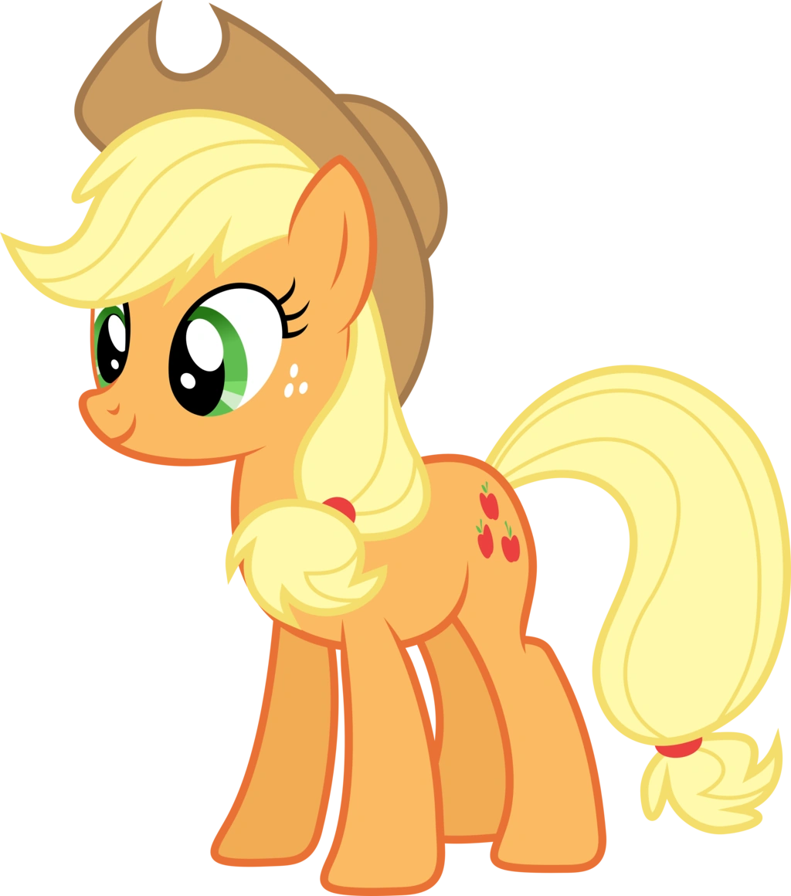

Earth ponies were the original ponies to be featured in the My Little Pony toy line. According to Lauren Faust, Earth ponies have a special connection to nature, animals, and plants. Though they lack the ability to consciously cast spells like unicorns or to fly and walk on clouds like Pegasi, their connection to nature makes them "just as necessary" as and "perhaps more important" than the other ponies.
This section will go over their History, Abilities and more.